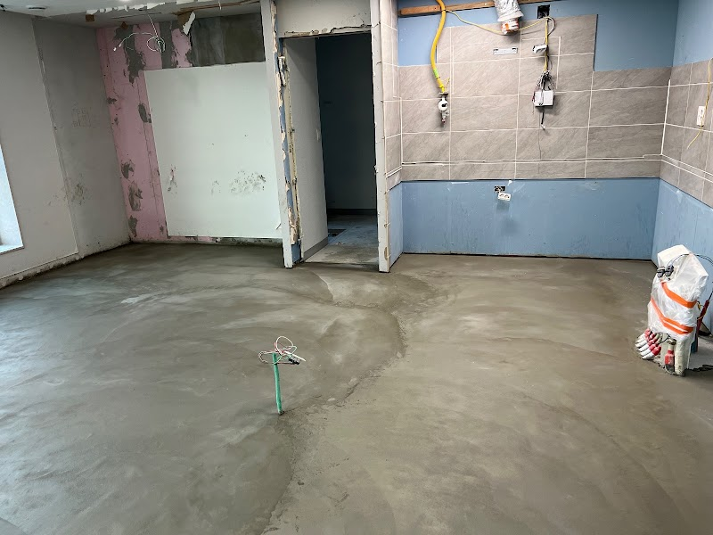
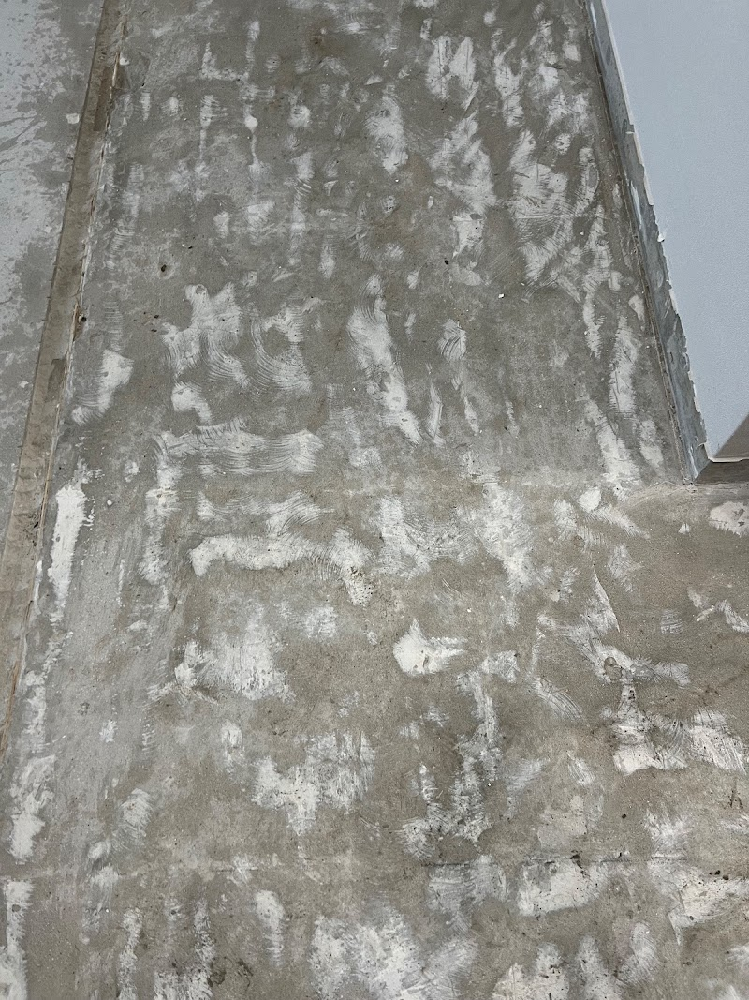
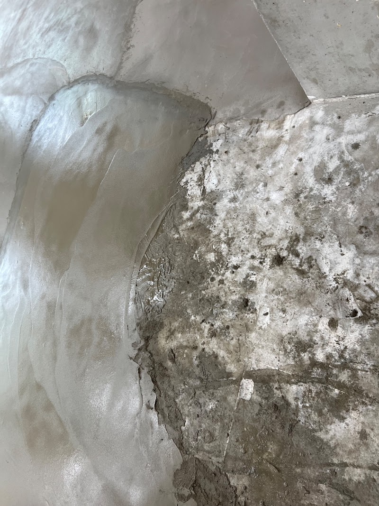
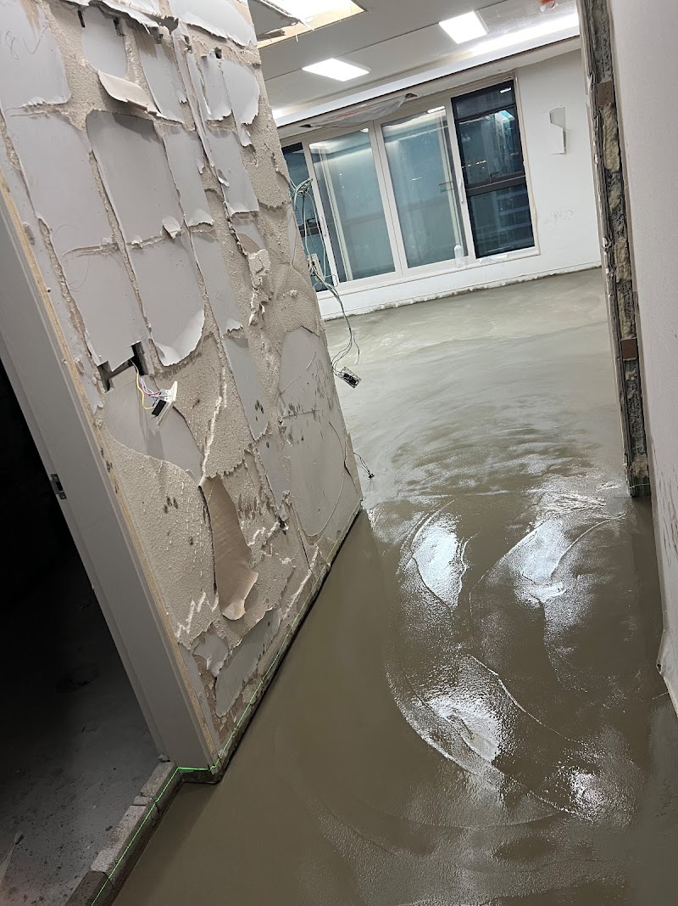

세종 도담동 상가 바닥 미장 — 마감재보다 먼저 챙겨야 하는 공정

단차와 요철이 있는 상가 바닥을 미장으로 수평을 잡은 현장입니다. 어떤 마감재든 품질은 그 아래 바닥에서 결정됩니다.
어떤 공사였나요
세종 도담동의 상가 바닥 미장 현장입니다. 기존 바닥에 단차와 요철이 있어 그대로 마감재를 올리면 들뜨거나 깨지기 쉬운 상태였습니다. 바닥을 정리하고 미장으로 수평을 잡았습니다.

기준 수평을 어디에 잡는가
미장에서 중요한 첫 번째는 기준 수평입니다. 문턱·출입구 높이와 만나는 지점을 계산해서 잡아야 나중에 문이 안 닫히는 일이 없습니다.

양생이 품질을 좌우합니다
두 번째는 양생(굳히는 시간)입니다. 겉이 말라 보여도 속이 덜 굳은 상태에서 마감재를 올리면 균열이 갑니다. 양생 중에는 환기는 하되 직사광이나 직풍으로 급격히 말리는 것을 피해야 합니다.

상가 오픈 일정과 미장
상가는 양생 기간까지 포함해 역산해서 공사일을 잡아야 오픈 일정에 차질이 없습니다. 견적 때 양생 기간까지 함께 안내드립니다.